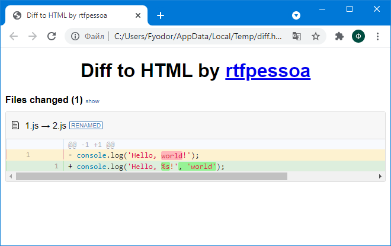
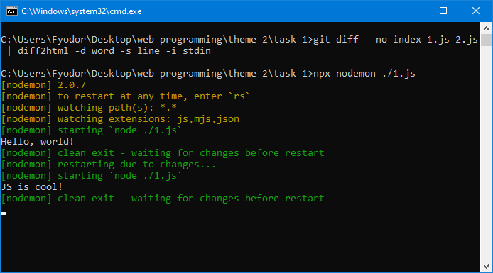

Тема 2. Основы современного JavaScript (ECMAScript 2016, ECMAScript 2017): синтаксис, структуры данных и функциональный стиль программирования
I. Развёртывание и настройка папки проекта и приложений для управления JavaScript-проектом и мониторинга зависимостей
- Создание проекта
npm init -y
- Установка diff2html-cli
npm -i -D diff2html-cli
- Установка nodemon
npm i -D nodemon
- Выполнение diff2html
git diff --no-index 1.js 2.js | diff2html -d word -s line -i stdin

- Автоматизация перезапуска сценария с помощью nodemon
npx nodemon ./1.js

II. Часть А. Разработка веб-сценария, содержащего решение линейной системы уравнений методом Крамера
0.68 0.44
Часть Б. Разработка веб-сценария в функциональном стиле JavaScript с использованием условного (тернарного) оператора
yes
=NaN